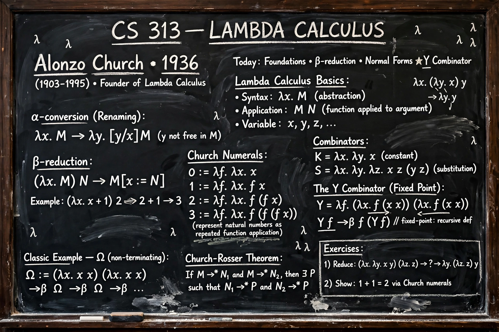

Alonzo Church
From Wikipedia, the free encyclopedia

Alonzo Church (June 14, 1903 – August 11, 1995) was an American mathematician and logician who made fundamental contributions to mathematical logic and theoretical computer science. He invented the Lambda calculus, proved the undecidability of the Entscheidungsproblem (Church's theorem), and co-formulated the Church–Turing thesis, which identifies the informal notion of effective calculability with the functions computable by a Turing machine.
Work
Church, a Princeton professor from 1929, introduced the lambda calculus in the early 1930s as a foundation for mathematics; when its original logic proved inconsistent, the stripped-down calculus of functions became a model of computation. His 1936 paper 'An Unsolvable Problem of Elementary Number Theory' showed no algorithm can decide the truth of arbitrary first-order statements — independently of his student Alan Turing's machine-based proof the same year. That two such different formalisms captured the same class of functions grounded the Church–Turing thesis.
Influence
Church edited the Journal of Symbolic Logic for decades and trained a generation of logicians, including Stephen Cole Kleene, J. Barkley Rosser and Dana Scott. The lambda calculus directly inspired Lisp and the functional-programming tradition; his name also attaches to Church–Rosser theorems on the calculus's consistency of evaluation, and to Church encoding.
Life
A deeply religious Presbyterian and a famously meticulous lecturer, Church remained at Princeton until 1967 and then at UCLA until 1990. He died in Hudson, Ohio, in 1995, aged 92.